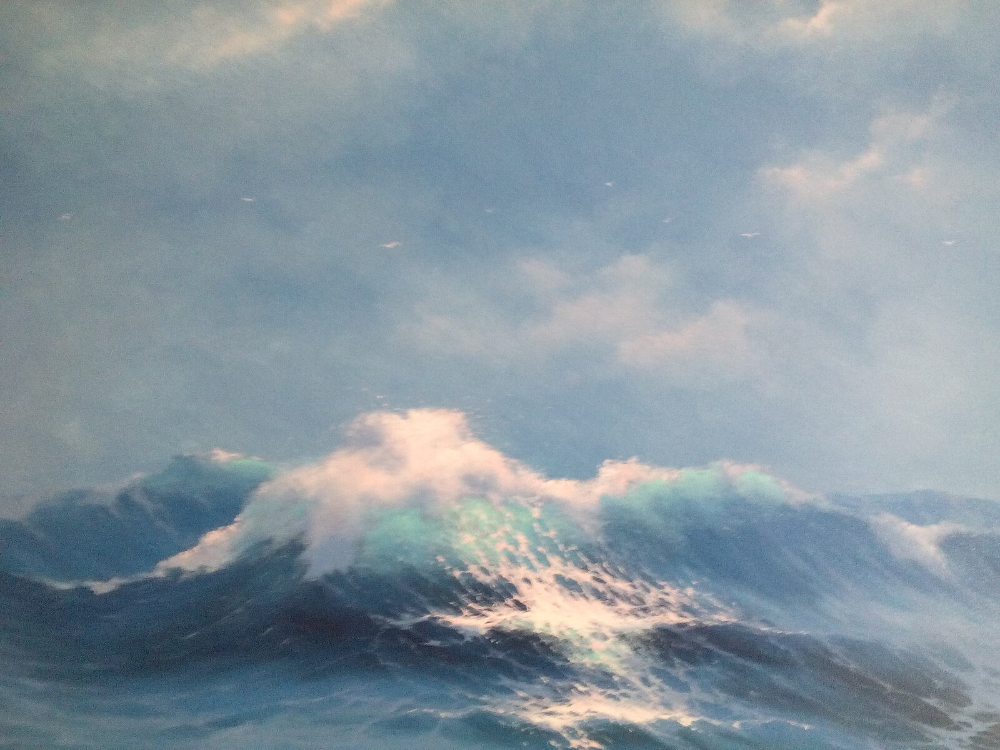

7 August 2025
the shoreline moves

dear you,
we meet in the half-light,
where hesitation wears perfume:
subtle, deliberate, impossible to place.
curiosity hums under the skin,
like a pull beneath the surface
before the tide begins to shift.
you speak gently,
as if afraid to wake the ache that sleeps beneath my ribs.
i listen anyway.
sometimes i smile like i’m testing
the strength of my own mouth,
and flinch when kindness lingers.
you don’t ask for anything,
and yet, the silence is full
of things not yet named.
some things are truer before they’re spoken.
there are days i feel i’m standing still,
yet the shoreline keeps changing.
what was near now feels distant.
what felt solid now gives.
i don’t know if i’m moving toward something,
or if the world is just quietly rearranging itself around me.
you don’t reach for me, and still,
some part of me leans forward,
as if the tide might rise again
and bring clarity with it.
just like how salt stays in the air
even when the ocean is far from sight.
yours, kate
(artwork: ‘timeless’ by robert m sherwood)